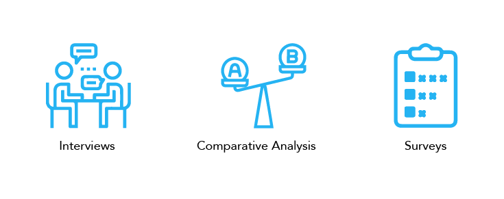

Methods
User Interviews, Comparative Analysis, Survey, Heuristic Evaluation, & Usability Testing
Role
UX Researcher & Designer
Team
Neha Dhawan, Chuhan Hou, Matt Cloutier, Nick Murray, & Lauren Elbaum
Duration
12 weeks
Problem Statement
Our project was to improve the invoicing process in Coupa.
Coupa is a spend management software as a service (SaaS) provider built on Amazon Web Services that helps enterprises manage their indirect purchases, invoices, and expenses in real-time.
Overview
From our stakeholder interviews, we understood that Coupa was interested in finding problems encountered in the invoice creation process for its users. We utilized needs assessment and usability evaluation methods to do the research for this project and found a series of specific yet interrelated problems within the process. Finally, we devised a solution bundle to tackle these problems.
Needs Assessment Phase
Our needs assessment phase included user interviews, comparative evaluation, and survey.
Interviews
We conducted 2 stakeholder interviews with our client to understand the problem from our client’s perspective. It also helped us get an overview of the product and understand the invoicing process on a very high level.
We then conducted 5 interviews with the current Coupa users:
- Three of our interviewees were the Directors at the accounts payable department.
- Two of them were financial analysts.
We also conducted 1 interview with an accounts payable employee who uses software other than Coupa as a point of reference.
Goal of the interviews:
- Discover user needs for Coupas invoice system
- Find pain points associated with the Coupa’s invoice management system.
After all the six interviews, we transcribed all the interviews and did interpretation sessions to find patterns. We then derived overarching themes via a widely-used qualitative method known as an “Affinity Wall Diagram,” which allows for the physical clustering of key findings around emergent themes.
Personas
Our user interviews helped us to develop three primary personas:
Competitive Analysis
We identified 3 direct competitors, 2 partial competitors, 4 parallel competitors and 1 analogous competitor.
Goals of the comparative analysis
- Finding Coupa’s strengths and weaknesses
- Uncovering features of the competitors that could help make Coupa a more robust platform
Broad criteria for comparative evaluation:
- Usability criteria included aesthetics, ease of use, data entry interface, and documentation quality.
- Our functionality criteria included readability of form field prompts, interoperability with other platforms, data update automation, offline availability, and OCR Capability.
Survey
We then deployed a survey which covered all three of our primary personas. We received 25 responses during our two-week window; 21 responses from users in accounts payable department and 4 suppliers.
Goal of the Survey
To validate if our findings from the interviews and the comparative evaluation were representative of the larger user population.
Findings From The Needs Assessment Phase
Finding 1: No errors displayed for duplicate entries
Coupa does not throw an error if suppliers submit invoices with the same invoice number twice. This leads to confusion in matching invoices to the correct Purchase order. Besides our 2 interviewees, 32.5% of our survey respondents mentioned that they faced this issue. Many of the competitors we analyzed such as QuickBooks, Concur and TurboTax inform their users proactively of the errors and guide them to resolve issues efficiently.
Recommendation
Run a data validation script on the website that checks for duplicate invoice numbers for any new entry against an existing invoices database for a given supplier and display an error to the user in real time.
Finding 2: More than one invoice can be associated to the same purchase order line
This allows suppliers to bill purchasers more than once for the same item. Besides our two interviewees, 22.5% of our survey respondents agreed that they faced this issue. Our interviewees expressed that repeat invoicing is the chief driver of supplier disputes; often, these disputes need to be resolved via costly conversations with suppliers.
Recommendation
We suggest that this issues could be resolved by “closing” a purchase order line once an invoice has been uploaded against that line. This would prevent any repeat charges to an individual Purchase order line.
Usability Evaluation Phase
ur second phase of research consisted of utilizing a heuristic evaluation and series of usability tests to discover the problems most readily faced by the novice users of the interface.

Heuristic Evaluation
For our heuristic evaluation, we each used Nielsen's ten heuristics to evaluate the interface. We assigned a severity rating to each issue individually and then aggregated our severity ratings to reach a final list of most severe issues.
Process

Goal of the heuristic evaluation:
- To evaluate the usefulness and usability of invoicing workflow in Coupa
Tasks for the heuristic evaluation
- Manually entering invoice data from invoices stored elsewhere on the users’ computer
- Entering invoice data based on invoices sent directly to Coupa via the ‘Invoice Inbox’ feature
Usability Testing
We conducted one pilot test and 5 usability tests with employees of accounts payable departments who had never used Coupa before. We designed 6 different tasks around invoicing to test the interface with 5 different users.
Process
During each usability test, we first administered a pretest-questionnaire to gather demographic information of the users to confirm their participation criteria. Then the moderator gave tasks to the users to perform. After each task and the whole testing session, participants filled out a post-questionnaire to rate the difficulty level of tasks and overall impression of the product. Notetakers observed the testing sessions in order to capture usability issues and reactions of the users to the interface during the session.
Goal of the Usability Testing
- To test the Coupa platform based on the issues we discovered in our previous research
- Gain deeper insights into usability issues.
Findings from the usability evaluation phase
We had three major findings from the usability evaluation phase:
Finding 1: Invoice Inbox has poor information architecture
Invoice Inbox has poor information architecture and it is hard to search invoices in it. All five of our users in usability tests faced this problem and two of them could not find the given invoice in the invoice inbox. The older invoices are listed first while the most recent invoices are listed many pages later. Consequently, users have to browse through all the pages to find the most recent invoice, unless they use the sort or search functionality. Furthermore, the sort functionality is not easily discoverable, and the search shows no relevant results when the users try to search for an invoice by invoice number or company name. This makes searching for invoices a real struggle. Below are few of the quotes from the participants during usability testing:
Recommendation
List invoices more logically, with the most recent invoices being displayed first. Also, the search functionality should be more robust so that users can search by company name and invoice number. We also recommend making the sort functionality more salient so that users can find it and use the sort functionality to view relevant results.
Finding 2: Filters associated with search are hard to discover and difficult to use
This finding came up during our heuristics evaluation and was validated during our usability testing when 2 of our 5 users did not discover the search filters. Additionally, the remaining three users who did discover the filters found them difficult to work with. There is a long drop down list of filters with more than 50 entries that is difficult to navigate through. Some users gave up after looking at the long list of filters because they did not find the relevant filter. The filters themselves are within an old fashioned search query that contains three fields. The second field has options like: “is”, “contains”, “is blank.” Other users spent time scrolling through the long list to find the filter they required and wrote a search query which frustrated them.
Recommendation
Make filters within search more apparent. Changing the hierarchy and positioning of the search bar and the “Advanced” button can help achieve this. We also suggest that the Advanced button must be renamed “Filters” or “Advanced Search” to make it more apparent that there are filters associated with the Search.
The filters should also be categorized so that they are easy to scan and use. The less frequently used categories can be grouped together as “More Filters” and must be made available to enhance the flexibility of use.
Finding 3: Lack of clarity in the User Interface copy
This finding overlapped in our needs assessment and usability evaluation phase. The user interface copy which comprises field labels and other text on the interface lacks clarity. 38.1% of our survey correspondents who had been using Coupa for more than 6 months mentioned that they do not understand meaning of certain fields.
Additionally, during our usability testing all our five users were confused about the “Billing” field and didn’t know whether they had to specify billing address, name, or amount. Another field that three of our users struggled with was “Invoice Control Total”.Users did not know if they had to enter billing address, name, or amount.
Recommendation
Make field labels more specific. Adding tooltips to explain complex fields may also help. Novice users of enterprise softwares have different needs than the experienced users and might greatly benefit with the guidance that tool tips or “learn more” sections. This will also reduce the workload on the customer support team. Another recommendation is to add examples and hints for filling these fields. This also prevents users running into errors later and increases efficiency. The fields should only allow users to enter certain types and formats of input. For instance, if “Billing” field stands for billing date, then only data in a date format should be allowed.
Limitations
- Due to time constraints we could only interview Coupa users from the US. Having diverse users from around the world would have given us better insights. We also could not interview any suppliers and got only four survey responses from suppliers, so we had very limited data on needs and pain points of suppliers.
- Ideally, we wanted to share the survey with a larger and more diverse audience, but due to time constraints we could only get in touch with limited users.
- We worked with the product in the test environment for all our research. This environment contained several test variables, fields, pop ups, etc. that would not be present in an ‘Live’ instance of the Coupa platform. This might have impacted our findings because some of these elements would not be present in the live instance of Coupa.
- Thirdly, as none of us had worked in financial domain, we were not familiar with financial and accountancy terms. So, our limited knowledge of the domain might have impacted the findings of our heuristic evaluation.
- Users in our usability testing belonged to same geographical area and had same job profile. It would have helped to have more diverse user base in usability tests.
Next Steps
As next steps, we would suggest reaching out to wider audience to validate our findings. We also recommend that suppliers be included as part of the study to understand their problems as they are a significant proportion of Coupa’s user base. Further needs assessment and usability evaluation on the supplier side would bring meaningful value to Coupa.
Conclusion
Through needs assessment and usability evaluation methods, we developed valuable insights regarding user needs and pain points in the invoice management platform. The research helped us give clear recommendations to Coupa to become a leader in the invoice management domain.